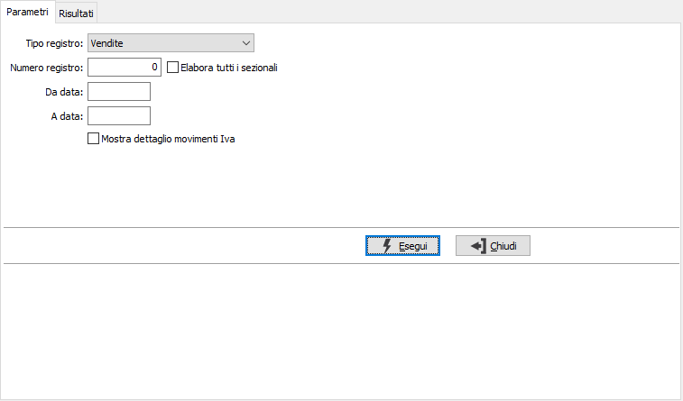
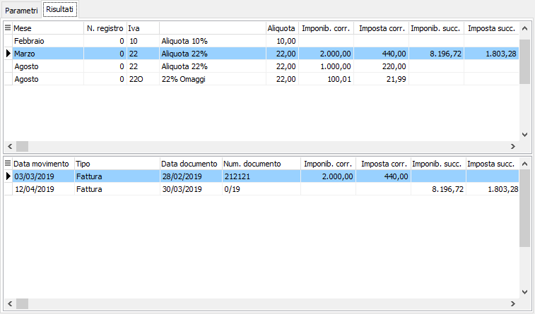

Controllo progressivi registro Iva
La procedura consente di analizzare i movimenti Iva di un determinato tipo di registro per un determinato periodo mostrando sia a video che in stampa i progressivi per aliquota suddivisi tra quelli del periodo corrente e quelli derivanti da movimenti successivi di competenza del periodo corrente. L'analisi può essere effettuata per il registro delle vendite, degli acquisti e dei corrispettivi e può essere effettuata per un singolo sezionale o per tutti i sezionali, è possibile inoltre visualizzare/stampare il dettaglio dei movimenti di un singolo periodo/aliquota.

Le fatture ad Iva differita e quelle con differimento posticipato dell'Iva (es. vendite di trasportatori) vengono riportate per data registrazione mentre non sono riportati i movimenti di trasformazione Iva per cassa.
Se in configurazione contabilità è impostata la stampa del registro Iva vendite per competenza non sarà possibile controllare il registro Iva vendite.

Per il mese vengono riportati i totali e i relativi documenti nel dettaglio, se richiesto nei parametri, del periodo corrente e quelli derivanti da movimenti successivi di competenza del periodo corrente. Sul dettaglio dei movimenti è possibile accedere direttamente al movimento contabile. Tramite i pulsanti presenti nella Toolbar sarà possibile effettuare la stampa.